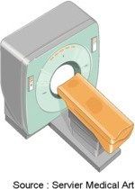

Bienvenue Sur Medical Education
Le scanner ou tomodensitometrie : TDM
DefinitionLe scanner ou tomodensitometrie (TDM) est un examen radiographique qui utilise les rayons X en faisceau tres etroit, avec leur propriete de traverser les tissus en fonction de leur densite, pour realiser des images en coupes axiales et fines du corps avec le plus souvent, l'utilisation de produit de contraste qui permet de renforcer les contrastes au niveau des visceres pleins.

Les types de scanner
L'arthroscanner
Principe
- Permet de visualiser les parois internes d'une articulation.
- Explorer des douleurs articulaires situees au niveau du genou, de l'epaule, de la hanche et plus rarement de la cheville, du coude ou du poignet.
le scanner abomino-pelvien
Principe
- Permet de visualiser le tube digestif (du bas de l'œsophage au rectum), les organes pleins (foie, rate, pancreas, reins,...), les vaisseaux et les ganglions de l'abdomen et du pelvis.
- Completer l'exploration d'anomalies detectees par d'autres examens radiologiques (echographie, lavement baryte,…) et/ou biologiques (bilan hepatique, pancreatique,…).
- Preciser un diagnostic d'une maladie localisee dans l'abdomen ou le pelvis.
- Surveiller l'evolution d'une maladie sous traitement.
- Bilans, avant ou apres une chirurgie digestive.
Le scanner cerebral
Principe
- Permet de visualiser les os et les vaisseaux du crene, du cerveau, des meninges et des cavites du cerveau.
- Depister une anomalie infectieuse, une malformation ou une tumeur.
- Apprecier le retentissement d'un traumatisme crenien s ou d'un accident vasculaire cerebral sur les autres structures cerebrales.
Le scanner des sinus
Principe
- Permet de visualiser les parois et le contenu des principaux sinus de la face.
- Bilan des pathologies chroniques sinusiennes comme les sinusites chroniques ou la polypose ou en cas de suspicion de tumeur benigne ou maligne.
- Traumatismes de la face.
Le scanner lombaire
Principe
- Permet de visualiser les structures vertebrales et paravertebrales lombaires (disque intervertebral, ligaments, muscles), ainsi que les elements du systeme nerveux qu'elles contiennent (moelle epiniere et racines nerveuses).
- Bilan des douleurs, dont l'origine pourrait etre une compression nerveuse par une structure vertebrale ou paravertebrale (douleur a type de sciatique).
- Suspicion d'une compression de la moelle.
Le scanner ORL
Principe
- Permet de visualiser l'anatomie de la region comprenant le pharynx et le larynx.
- Completer le bilan des tumeurs detectees par la laryngoscopie, avant une intervention chirurgicale.
- Surveiller l'evolution apres traitement et rechercher d'eventuelles recidives.
Le scanner thoracique
Principe
- Permet de visualiser les poumons, la plevre, et les vaisseaux qui irriguent les bronches et les poumons.
- Preciser une anomalie decouverte a la radiographie de thorax ou pour surveiller l'evolution d'une maladie pulmonaire en cours de traitement.
- Depister des petites tumeurs ou metastases d'un cancer, avant qu'elles ne soient visibles a la radiographie pulmonaire conventionnelle.
La preparation a l'examen
- Information du patient :
- Expliquer au patient, le but et le deroulement de l'examen : non douloureux, possibilite de sensation de chaleur lors du passage du produit de contraste iode.
- Duree longue de 45 minutes.
- Bilan biologique :
- Bilan de la fonction renale : uree, creatinine.
- Traitement en cours :
- Antidiabetique oral (biguanides) e arrete 48 heures avant car risque d'interactions avec le produit de contraste.
- Si terrain allergique : prise d'un traitement 72 heures avant l'examen.
- Etre a jeun depuis 4 a 6 heures afin d'eviter les vomissements pouvant etre provoque par le produit de contraste.
- Prise des parametres le jour de l'examen : temperature, pulsations, pression arterielle.
La surveillance de l'examen
- Surveillance de l'elimination du produit de contraste :
- Boire abondamment.